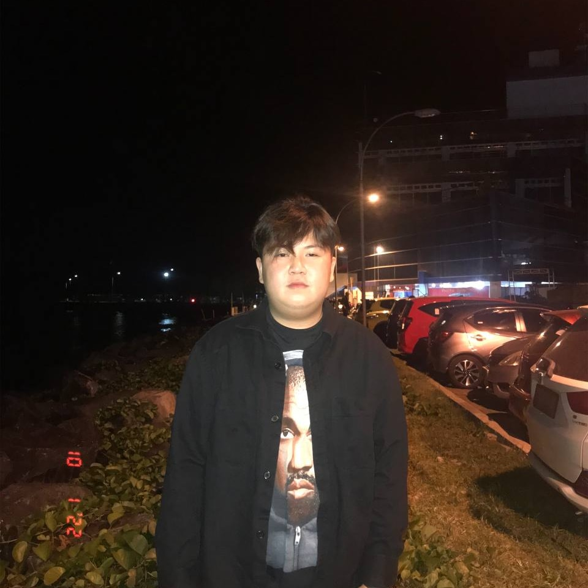

About Me
HALOOO!!! Nama saya Eiden Lukas. Saya adalah seorang mahasiswa teknik informatika di Universitas Sam Ratulangi. Saya memiliki minat yang mendalam dalam bidang teknologi dan komputer sejak awal kuliah. Saya selalu ingin belajar hal-hal baru dan terdorong untuk terlibat dalam proyek-proyek yang akan membantu saya memperluas keterampilan dan pengetahuan saya dalam bidang tersebut.